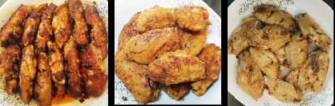

Intro
Brief Introduction
Born in the millennium, Sagittarius.
Undergraduate at SUSTech.
Intending to major in intelligent science and technology or applied physics. (But
as the applied physics major has been removed, I'll choose
intelligent science and technology major next semester)
Computer enthusiast since childhood.
Imagination and hands-on skills are not too bad.
I was once addicted to physics, only to discover later that I was actually
escaping reality by soaking in it.
Now learning to live in the moment.
Other information
Myers-Briggs Type Indicator: INTP\INTJ.
Believe in Emergentism, i.e. more is different.
Single.
To learn more about my Interests.
Interests
Main Interests
Self-study, coding, Minecraft\LEGO...
Other interests/favorites
Games
Tom Clancy's Rainbow Six Siege
while true: learn()
League of Legends(LOL)
Books
Textbooks, whodunits, science fictions...
Music
Ref:rain - Aimer
Lemon - Kenshi Yonezu
Food
Fish and chinken wings, like this...

...made by myself.
Research
I haven't officially entered scientific research stage yet, but I have had some vague directions already.
Artificial intelligence(AI)
The researches interest me in this field include: multi-agent reinforcement learning(MARL), quantum machine learning(QML).
Quantum Computation(QC)
I'm mainly interested in some algorithms of quantum computing, especially those which can help enhance artificial intelligence.
Computer graphics & Computer vision???
emmmmmm...
In fact, I'm not sure I really want to do scientific research. But one thing I know for sure is that I enjoy creative work,
which I developed as a kid playing with legos and later Minecraft. This interest also prompted me to learn programming by
myself at an early age in order to expand my ability to create something fantastic.
Contact
Eamil: 1550173722@qq.com
WeChat: yunlong_10
QQ: 1550173722
CSDN\Zhihu: